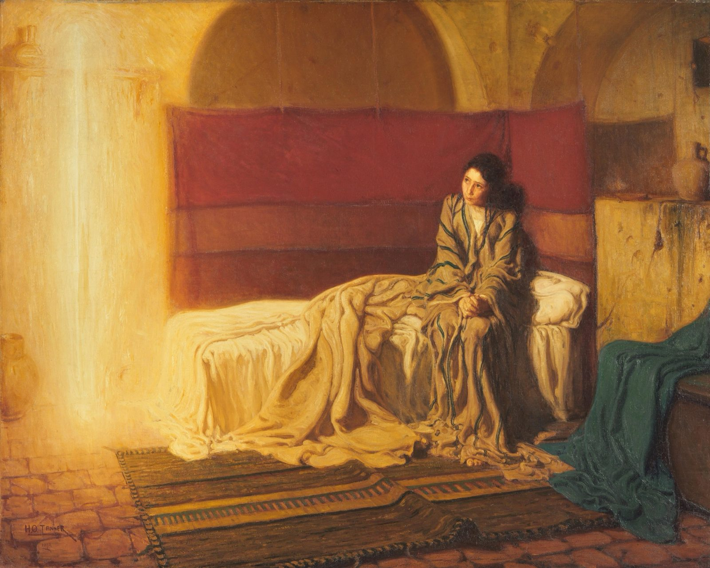
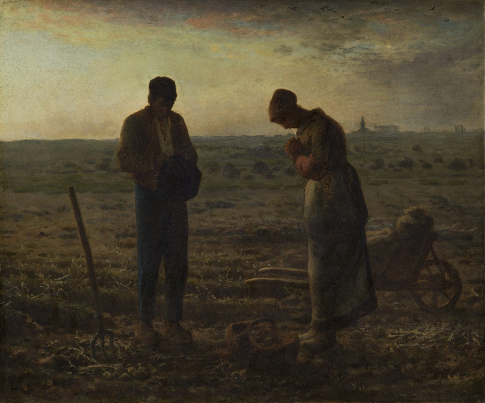
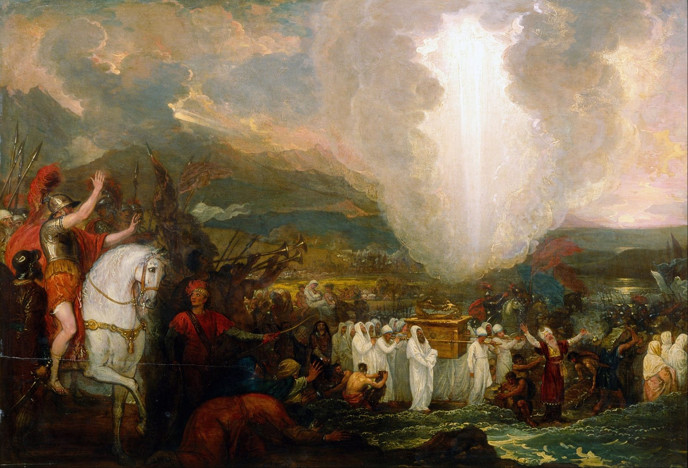

Слово
ко времени
Сначала Бог будит твоё ухо. Только потом Он даёт тебе слово для кого-то другого. Эта страница о том и о другом: как оставаться с тем, что Он говорит тебе, пока это не станет частью тебя, и как услышать, что Он говорит другому, прежде чем открыть рот.
«Владыка Господь дал Мне язык обучаемых, чтобы Я знал, как уставшего поддержать словом. Утро за утром Он будит Меня, будит ухо Мое, чтобы Я слушал, как ученик».
Ис. 50:4, Новый русский перевод

Коротко
Семь предложений. Каждое из них — раздел ниже.
- Когда строка цепляет, остановись. Не читай дальше в поисках строки получше. Что-то в тебе было готово именно к этой.
- Оставайся с ней днями, а не минутами. Повторяй её вполголоса. Прикладывай её к тому, что с тобой происходит. Возвращай её Богу в молитве.
- Слово становится твоим, когда оно меняет то, что ты делаешь, без всяких усилий с твоей стороны. До тех пор ты всё ещё его ешь.
- У слов есть свои времена. Одни — манна на один день. Другие кладут в кувшин и хранят.
- Ловушка: то, что звучит в тебе, не зазвучит в человеке, настроенном на другую ноту, как бы сильно ты ни давил. А для него это и ощущается как давление.
- Сначала услышь, какое у него время. Иисус спросил: «О чем?» — прежде чем учить. В трудное время у человека звучат только два голоса, обвинитель и защитник, и ты будешь усиливать один из них.
- Свидетельство — это камни для чужой переправы. Его задача — привести человека к тому, чтобы он сам услышал Бога, а не к тому, чтобы он слушал тебя.
Ухо
В порядке у Исаии — вся суть. Ухо пробуждается прежде, чем дан язык, каждое утро, и будит его Он. Нельзя передать другому слово, которого ты сам сначала не получил.
Что цепляет
Двое на дороге в Эммаус не знали, кто с ними говорит. Их сердца узнали первыми.
С тобой такое бывало. Ты читаешь, ещё не до конца проснувшись, и одна строка будто поднимается со страницы. Это не всегда самый важный стих в главе. Иногда это фраза посреди перечня. Но она попадает в тебя, и вся остальная глава вокруг неё затихает.
Обычно такую строку отмечают и читают дальше, как будто задача — дочитать главу. Эта страница предлагает обратное. Эта строка и есть чтение. Всё остальное было дорогой к ней.
Яснее всего в Писании это видно на двух уставших учениках, которые вечером в день воскресения идут в Эммаус. К ним присоединяется незнакомец и открывает им Писания, Моисея и всех пророков, почти на протяжении семи миль. Они Его не узнают. Потом Он преломляет хлеб у них за столом, у них открываются глаза, и Он исчезает. И первое, что они говорят друг другу, — не о том, что они увидели. Это о том, что они чувствовали в дороге, ещё до того, как узнали:
«Разве не горело в нас сердце, когда Он говорил с нами по дороге и объяснял нам Писания?!»
Лк. 24:32, НРПВ этом предложении стоит сохранить три вещи.
- Сердце горело прежде, чем они узнали Его. Им не нужно было знать, что это Он, чтобы их сердца Ему откликнулись. Чтобы остаться со строкой, которая горит, уверенность не нужна.
- Назвали они это, только оглянувшись назад. В дороге это был просто разговор, который казался необычно живым. Большинство из нас замечает отклик поздно. Это нормально, и именно поэтому стоит остановиться, когда что-то попадает в тебя, а не надеяться разобраться потом.
- Оно горело, пока им открывали Писание. Этот огонь не был чувством, висящим в воздухе. Он был привязан к тексту, а текст был о Нём.
Иисус говорит, что Его овцы слышат Его голос (Ин. 10:27). Он не говорит, что они с самого начала слышат его безошибочно. Мальчик Самуил слышал его трижды и каждый раз бежал не к тому человеку, потому что он «не знал еще Господа» (1 Цар. 3:7). Понадобился старый священник, чтобы сказать ему, чей это голос. Узнавать учатся, и обычно учатся с чьей-то помощью. Вторая часть этой страницы о том, как стать такой помощью для другого.
Остановись и останься
Не на десять минут. Столько, сколько строка ещё жива.
В 1685 году французская вдова Жанна Гюйон издала небольшую книгу о молитве для обычных людей. Её совет о чтении Писания укладывается в одно предложение, и это сердце этого раздела: читай понемногу, распробуй и не иди дальше, пока ещё чувствуешь вкус.
«…читать лишь небольшую часть, стараясь распробовать и переварить её, извлечь из неё суть и существо, и не идти дальше, пока в этом месте остаётся хоть какой-то вкус или сладость».
Jeanne Guyon, A Short and Easy Method of Prayer (1684–85), глава II, «The Method of Prayer», английский перевод, общественное достояние (Christian Classics Ethereal Library)«Внутренняя комната» рассказывает её историю, и там есть читалка, сделанная под её метод, по одному отрывку за раз. Эта страница начинается там, где заканчивается одно чтение. Что, если строка всё ещё жива на следующее утро? Тогда ты с ней не закончил. Ты в ней поселился.
Четыре движения, одна строка
В конце XII века картезианский приор по имени Гиго написал короткое письмо о том, как читают монахи. Образом ему служила еда, и его четыре шага до сих пор работают:
- Чтение кладёт пищу в рот.
- Размышление её пережёвывает.
- Молитва её пробует.
- Созерцание — это сама сладость.
Большинство из нас делает только первое. Мы глотаем целиком, а потом удивляемся, что еда ничего не дала.
Бормотать, повторять вполголоса. Исаия употребляет это же слово о льве, который рычит над добычей, пока пастухи на него кричат (Ис. 31:4). Это не опустошение ума. Это когда повторяешь строку снова и снова и не отпускаешь её. В «Нити» есть полный разбор этого слова.
Путь Марии: приложи слово к своему дню
Когда пастухи ушли, Лука пишет, что Мария «все запоминала и размышляла об этом» (Лк. 2:19). Греческое слово, переведённое как «размышляла», symballousa, значит «бросать вместе», «класть рядом». Вот как выглядит жизнь в одном слове на протяжении недели. Ты не просто его повторяешь. Ты прикладываешь его ко всему, что происходит, — к трудному разговору, к счёту, к молчанию — и спрашиваешь, что строка говорит об этом.
Другие, кто оставался на неделю
Мысль не новая. В 1930-х годах маленькая семинария в Финкенвальде, которой руководил Дитрих Бонхёффер, давала всему дому для размышления на целую неделю один довольно короткий библейский текст. В книге «Жизнь вместе» он писал: «Часто нам придётся останавливаться на одном предложении или даже на одном слове». А столетием раньше, 7 мая 1841 года, Джордж Мюллер записал в дневнике, что наконец увидел: «самое важное, что я должен был делать, — отдавать себя чтению Слова Божьего и размышлению над ним». Чтение без размышления, писал он, проходит через ум, «как вода проходит через трубу».
Поселиться в строке — это не метод, который можно пройти до конца. Это заканчивается, когда строка перестаёт быть новостью и становится нормой. Инструмент ниже помогает оставаться с одной строкой неделю, по одному маленькому шагу в день. Твоя строка хранится только на этом устройстве.
Поселись в одной строке
Семь дней, по одному шагу в деньХранится только в этом браузере, на этом устройстве. Никуда ничего не отправляется.
Пока это не станет тобой
Пророкам не велели изучать свиток. Им велели его съесть.
Трижды в Писании человеку дают Божьи слова и велят их съесть. Иезекиилю дают свиток и велят наполнить им чрево, и у него во рту он «сладким, как мед» (Иез. 3:1–3). Иеремия говорит: «Твои слова были найдены, и я съел их; Твои слова стали моей радостью и весельем моему сердцу» (Иер. 15:16). Иоанну на Патмосе дают маленький свиток и говорят то же самое (Откр. 10:9–10).
Еда — верный образ из-за того, что происходит потом. Пищу не хранят. Она становится тобой. Съеденное слово — уже не то, что ты цитируешь. Это то, из чего ты сделан.
У этого образа есть и предупреждение, и его получили и Иезекииль, и Иоанн. Во рту свиток был сладким. У Иоанна в желудке он стал горьким. Иезекииль ушёл «огорченный, и дух мой негодовал» (Иез. 3:14) и семь дней сидел оцепеневший. Слово, которое тебя изменит, в какой-то момент с тобой не согласится. Если ты живёшь только в сладкой части, ты его ещё не съел.
Что может и чего не может значить «стать словом»
Только Один есть Слово, ставшее Человеком (Ин. 1:14). Никто другой этим не становится, и такая страница должна сказать это прямо. Но у Павла есть меньшая и очень настоящая версия: «Вы сами — наше письмо: письмо, записанное в наших сердцах, известное и читаемое всеми людьми… написанное… не чернилами, а Духом живого Бога» (2 Кор. 3:2–3). Ты становишься письмом, местом, где сказанное Им могут прочитать люди, которые никогда не откроют книгу.
Иаков так же прямо описывает провал. Тот, кто слушает и не исполняет, похож на человека, который смотрит в зеркало, отходит и забывает, как выглядит (Иак. 1:23–24). Услышать — это ещё не финиш.
Как понять, что оно стало настоящим
- Оно само возвращается к тебе, под давлением, прежде чем ты за ним потянешься. Иисус сказал, что Дух напомнит (Ин. 14:26). Вот как это ощущается изнутри.
- Изменилась привычная реакция. Ты меньше вздрагиваешь или отвечаешь иначе, и ты этого не решал.
- Ты можешь сказать это своими словами, и их немного.
- Тебе больше не нужно, чтобы кто-то ещё это почувствовал, чтобы для тебя это было правдой.
- Ты мог бы мягко отдать это нужному человеку, не навязывая.
Противоположность этому — коллекционирование. У некоторых из нас целые блокноты строк, которые зацепили, и каждую бросили ради следующей. Коллекция похожа на рост, но по большей части это туризм. Одна съеденная строка даёт больше, чем сотня, которой просто любовались.
У слов есть свои времена
Одни — манна на одно утро. Другие идут в кувшин.

«Всему есть свое время» (Екк. 3:1). Это верно и о том, что Бог говорит тебе. Поэтому спроси, что значит стих, а потом спроси, почему именно эта строка зацепила сейчас.
Манна в пустыне — самый ясный урок о том, как хранятся слова. Она приходила каждое утро. Кто пытался её запасти, на следующий день находил в ней червей (Исх. 16:19–20). Вчерашнее слово, за которое держатся из страха, что другого не будет, портится. Но в той же главе Моисей велит Аарону положить в кувшин омер манны и хранить его перед Господом для грядущих поколений (Исх. 16:32–34). Большинство слов — на день. Немногие — для кувшина, чтобы хранить их и показывать детям.
Иисус так же описывает рост: «Сначала появляется росток, затем колос, колос наливается зерном» (Мк. 4:28). Никто не кричит на росток за то, что он ещё не колос. Каждая стадия правильна в своё время, и каждой нужно своё слово.
Как прочитать своё время
- Ищи повтор. Когда одна и та же мысль за месяц приходит к тебе с трёх сторон — из проповеди, от друга, из строки в чтении, — обрати внимание. Повторение — самый простой способ, которым время о себе заявляет.
- Замечай, на что оно отвечает. Слово обычно попадает в вопрос, который ты уже носишь в себе, даже если не произносил его вслух. Назови этот вопрос, и ты поймёшь своё время.
- Замечай, когда оно затихает. Время заканчивается, когда слово перестаёт быть новым и становится нормой. Это не потеря. Это значит, что слово стало тобой.
- Не строй целое богословие на одном времени. Слово для твоей пустыни — не закон для чужой жатвы. С этого начинается вторая часть.
Не всё, что отзывается, — от Бога
Отклик — это сигнал. Это не приговор.
У всего в этой половине страницы есть теневая сторона, и её нужно назвать. Рана тоже отзывается. Горечь умеет находить стихи, которые будто загораются ради неё. Страх может сделать предупреждение похожим на слово от Бога. Уставший ум услышит то, что хочет услышать. Наставление Павла покрывает обе стороны сразу: не угашайте Духа, пророчеством не пренебрегайте, «но все проверяйте и держитесь добра» (1 Фес. 5:19–21).
Джонатан Эдвардс прожил Великое пробуждение и защищал его от критиков. И всё же он включил вот что в свой список вещей, которые ничего не доказывают ни в ту, ни в другую сторону:
«Это не признак того, что религиозные чувства истинно святы и духовны, равно как и того, что они не таковы, — что они приходят вместе со стихами Писания, необычайно пришедшими на ум».
Jonathan Edwards, A Treatise Concerning Religious Affections (1746), часть II, раздел VОн не говорил, что такие стихи ложны. Он говорил, что то, как стих приходит, не решает, откуда он пришёл. Его последней проверкой было то, что это потом приносит в жизни. Исследования памяти указывают туда же. Люди гораздо лучше запоминают слова, которые касаются их собственной жизни, чем те, что не касаются. Поэтому стих, который подходит к твоей ситуации, будет ощущаться как направленный на тебя. Это повод остаться с ним. Это не доказывает, что он предназначен только тебе.
Вот короткая проверка для строки, которая попала в тебя. Ничего нового в ней нет. Этим церковь пользуется очень давно.
- Куда это ведёт? К Иисусу, к любви, к свободе — или к страху, превосходству и одиночеству? Игнатий Лойола, написавший в XVI веке классические правила для такого различения, советовал следить за всем ходом мысли: за началом, серединой и концом. Мысль, которая начинается прекрасно, а заканчивается тем, что ты встревожен, горд или отрезан от других, пришла не оттуда, откуда казалось.
- Согласуется ли это с остальным Писанием? Строку, вырванную из главы, можно заставить сказать что угодно. Прочитай главу вокруг неё.
- Вывод пришёл вместе с утешением или после него? Игнатий заметил, что сразу после настоящего прикосновения Бога ум продолжает работать и строит собственные планы. Эти планы, писал он, «нужно очень хорошо проверить, прежде чем полностью им довериться». Настоящая встреча не одобряет всё, что ты решил в следующий час.
- Пережило ли это ночь сна? Свидетельство Духа терпеливо. Паника и честолюбие торопятся.
- Принял бы ты на этом большое решение, когда тебе плохо? Самое известное правило Игнатия — ничего не менять во время опустошённости. Живи в этой строке. Действуй потом, когда будешь твёрдо стоять на ногах.
- Сказал ли ты это тому, кто тебя любит и может с тобой не согласиться? Самуилу нужен был Илий. Тебе тоже.
Язык
Слово у Исаии не для всех. Оно для уставшего, и оно должно прийти вовремя. Верное слово в неверное время может лечь ещё одним грузом.
Заставить их звучать твоей нотой
Ловушка не в том, чтобы делиться тем, что изменило тебя. Она в том, чтобы нуждаться, чтобы это изменило их так же.
Что-то тебя изменило. Строка, книга, учитель, время. Естественно хотеть, чтобы у всех, кого ты любишь, это тоже было, и в этом желании нет ничего плохого. Отсюда начинается любое свидетельство. Ловушка — в том, что происходит, когда они не загораются так, как ты: разочарование, вторая попытка, статья, пересланная с припиской «тебе ОБЯЗАТЕЛЬНО надо это прочитать», смутное чувство, что они, наверное, не так голодны, как ты.
Вот почему это не работает. Струна откликается на ноту, на которую уже настроена, и только на неё. Тихо возьми совпадающую ноту в другом конце комнаты, и она зазвучит сама. Возьми не ту, и она едва шелохнётся. Заставить её двигаться всё равно можно. Схвати её и тряси в своём темпе, и она пойдёт туда, куда ты её толкаешь. Но это не отклик, это принуждение. Оно требует всех твоих сил, и как только ты отпускаешь, то, что осталось, звучит собственной нотой струны, а не твоей.
Попробуй ниже. Ты не знаешь их ноты. В этом и смысл.
Отозваться или толкать
Настоящая затухающая струна, а не анимацияВыбери ноту и сыграй её один раз. Смотри на вторую струну.
«Что тебе до этого?»
Последний разговор в Евангелии от Иоанна именно об этом. Иисус только что восстановил Петра у озера, три вопроса на три отречения, и сказал ему, как он умрёт. Пётр оборачивается, видит, что за ними идёт Иоанн, и задаёт самый человеческий вопрос в книге: «Господи, а с ним как будет?»
«Иисус ответил: — Если даже Я захочу, чтобы он был жив, пока Я не приду, то что тебе до этого? Ты следуй за Мной.»
Ин. 21:22, НРППётр только что получил самое личное слово в своей жизни, и первое, что ему хочется, — сравнить его с чужим. Иисус не будет обсуждать с ним Иоанна. У Иоанна своя дорога, свой темп и свой конец. И наоборот то же самое: слово, которое Иисус дал Петру, было не для Иоанна.
Павел говорит то же самое о церкви: «Если бы все тело состояло из одного глаза, то где был бы слух?» (1 Кор. 12:17). Ты замечаешь то, мимо чего проходят другие, а они замечают то, чего ты никогда не увидишь. Это не их недостаток. Так устроено тело. Даже Евангелий четыре, а не одно: тот же Иисус, увиденный четырьмя разными людьми. Римлянам 14 позволяет двум верующим по-разному относиться к дням, и «пусть каждый и дальше поступает в соответствии со своими убеждениями» (Рим. 14:5). А потом Павел говорит ещё острее: «Пусть твое мнение на этот счет будет твоим личным убеждением перед Богом» (Рим. 14:22). Что-то может быть настоящей верой перед Богом и при этом не быть заданием для всех вокруг.
Слово, которое горит в тебе, может быть Божьей работой в тебе задолго до того, как станет Его словом через тебя.
Поэтому лучше спрашивать не «как сделать, чтобы они почувствовали то, что почувствовал я?», а «что Бог уже говорит им и как мне этого не заглушить?».
Сначала услышь, какое у них время
На дороге в Эммаус Иисус знал всё, что они собираются сказать. И всё равно спросил.
Вернись на дорогу. Двое учеников идут, печальные, спорят. Иисус присоединяется к ним и спрашивает, о чём они говорят. Они останавливаются, и один из них, Клеопа, по сути говорит: неужели Ты единственный в Иерусалиме, кто не слышал? И Иисус, Который Сам и есть эта новость, говорит: «О чем?» (Лк. 24:17–19).
Он дал им сначала рассказать по-своему: об их надежде — «а мы надеялись, что Он Тот, Кто должен освободить Израиль» — и об их растерянности из-за пустой гробницы. Только после того как Он услышал, где они на самом деле, Он открыл им Писания. Горящие сердца из раздела 01 пришли после вопроса.
Так Он делает во всех Евангелиях. Он «не говорил им больше того, что они были в силах воспринять» (Мк. 4:33). Собственным ученикам Он говорит: «Многое Мне еще хотелось бы вам сказать, но сейчас вам не под силу это воспринять» (Ин. 16:12). Богослова Никодима Он встречает ночью загадкой о новом рождении (Ин. 3), а самарянку в полдень — просьбой дать Ему напиться (Ин. 4). Два разговора, два противоположных начала, потому что перед Ним были два разных человека. И Слуга из Ис. 42 кроток вполне определённым образом: «Он тростника надломленного не переломит и тлеющего фитиля не погасит» (Ис. 42:3). Некоторым людям до того, чтобы погаснуть, осталось одно неверное слово.
«…одно и то же увещание подходит не всем, поскольку и нравом все не одинаковы».
Gregory the Great, The Book of Pastoral Rule (около 590), книга III, пролог, пер. James Barmby (1895)Григорий был епископом Рима во времена чумы и войны, и третья книга его руководства для пастырей — длинный список противоположных людей, которым нужны противоположные слова. Радостные и печальные. Дерзкие и робкие. Нетерпеливые и терпеливые. Здоровые и больные. Смиренные и надменные. Его мысль проста и прожила четырнадцать веков: слово, которое лечит одного, ранит следующего.
Иоанн Златоуст сказал то же самое за два века до него: «невозможно всех, кто вверен тебе, вести по одному образцу, ведь и врачам нехорошо применять одно лечение ко всем больным». А когда Джон Уэсли собрал первых методистов в небольшие группы, руководитель должен был видеться с каждым каждую неделю, «чтобы узнать, как преуспевают их души; чтобы советовать, обличать, утешать или увещевать, как того потребует случай». Как того потребует случай: один руководитель, разные слова.
Желание всё исправить
У консультантов есть название для того, что здесь идёт не так. В мотивационном консультировании это называют рефлексом исправления: сильное желание поправить человека, из-за которого он обычно начинает спорить в защиту того самого, от чего ты хочешь его отвести. Психологи, изучающие реактивное сопротивление, описывают то же с другой стороны: когда люди чувствуют, что на их свободу давят, они давят в ответ, чтобы её вернуть. Ни одна из этих находок не о вере, но обе хорошо описывают Притч. 18:13: «Отвечать, не выслушав, это глупость и стыд».
К чему ты прислушиваешься
- Какое у них сейчас время? Горе, ожидание, пустыня, новое начало, борьба, жатва, выгорание. Каждому нужно своё слово, а некоторым какое-то время не нужно никакого.
- О чём они на самом деле спрашивают? Не о том, о чём тебе хотелось бы, чтобы они спросили.
- Что Бог уже делает? Почти всегда что-то есть. Варнава прибыл в Антиохию и, прежде чем что-то сказать, «увидел милость Божью» и обрадовался (Деян. 11:23). Начни с этого.
- Во что они верят о себе или о Боге такого, что держит их на месте? Это раздел 09.
Два голоса в трудное время
Когда ты говоришь в чью-то борьбу, ты присоединяешься к одному из них.
Новый Завет называет два голоса, которые говорят о верующем перед Богом. Один — «обвинитель наших братьев, обвинявший их день и ночь перед Богом» (Откр. 12:10). Греческое слово взято из суда: тот, кто выдвигает обвинение. Другой — защитник, paraklētos: «если кто из вас и согрешит, то у нас есть Праведник Иисус Христос, Который свидетельствует перед Отцом в нашу защиту» (1 Ин. 2:1). Павел ставит их лицом к лицу: «Кто будет обвинять избранных Богом? Если Бог оправдывает…» (Рим. 8:33).
Яснее всего это видно в сцене из Зах. 3. Иисус, первосвященник, стоит перед ангелом Господа в грязной одежде, а сатана стоит по правую руку от него, чтобы обвинять его. То, что говорит обвинитель, не ложь. Одежда действительно грязная. Но Господь не спорит о фактах. Он обличает обвинителя, говорит об Иисусе: «Разве этот человек не горящая головня, выхваченная из огня?» — и велит снять с него грязную одежду и надеть чистую.
Вот по чему его узнать. Обвинитель часто прав. Выдаёт его не то, в чём он ошибается. А то, что он хочет сделать с тем, в чём прав. Он хочет приговора. Бог хочет сменить одежду.
Три друга Иова — предупреждение всем остальным. Многое из того, что они говорили, было обычным здравым богословием. Семь дней они молча сидели с Иовом, и это было лучшее, что они сделали. Потом они начали объяснять ему его страдание. В конце книги Бог говорит им: «вы говорили обо Мне не так верно, как Мой слуга Иов» (Иов 42:7). Верное учение, не то время и не на той стороне.
Фразы обвинителя
- «Ты всегда так делаешь».
- «Ты уже должен был уйти дальше».
- «Если бы у тебя правда была вера, это бы уже кончилось».
- «После всего, что было, мог бы уже и понять».
- «Может, в твоей жизни есть что-то, с чем Бог разбирается».
Фразы защитника
- «Это не конец твоей истории».
- «Он тебя не отпустил».
- «Я уже видел, как ты проходил через трудное».
- «Как ты думаешь, что Он думает о тебе прямо сейчас?»
- «Можно я расскажу, что Он сделал для меня?»
Хороший вопрос к себе, прежде чем заговорить: если бы они услышали от меня только это предложение и больше ничего, на чей голос оно было бы похоже?
Ложь под борьбой
Большинству застрявших людей не хватает не информации. Они верят в одно неправдивое предложение о себе или о Боге.
Первый вопрос Бога к согрешившему человеку был не о плоде. Это было: «Кто сказал тебе, что ты наг?» (Быт. 3:11). Он пошёл к тому, откуда взялось это предложение. Это и сейчас лучший вопрос в трудном разговоре, и поэтому в этом разделе каждая ложь начинается с вопроса, который стоит задать, а не с того, что стоит сказать.
Эти семь встречаются снова и снова. Нажми на любую, чтобы открыть. В каждой есть обвинительская версия «помощи», то есть то, чего стоит избегать, слово, которое часто подходит к этому времени, и свидетельство из Писания, которое можно рассказать. У тебя будут и свои свидетельства, и обычно они будут лучше этих.
Камни для чужой переправы
Свидетельство — не довод. Это доказательство того, что реку перешли, оставленное там, где его увидит следующий.

Когда Израиль переходил Иордан, Иисус Навин велел взять по одному человеку от каждого колена, чтобы каждый поднял камень со дна реки и перенёс его на другой берег. Причиной он назвал вопрос, который через годы зададут их дети: «Что значат эти камни?» (Нав. 4:6). Ответом была история. Вода остановилась, и мы перешли.
Вот для чего свидетельство. Это не ты доказываешь свою правоту. Это груда камней на дальнем берегу реки, перед которой стоит кто-то другой. Она говорит ему, что переправа возможна, потому что кто-то её совершил.
Лучший стих о свидетельстве — о его пределе
Самарянка после разговора с Иисусом бежит обратно в свой город и говорит: «Идите и посмотрите на Человека, Который рассказал мне все, что я сделала» (Ин. 4:29). Многие уверовали, «потому что женщина сказала» (Ин. 4:39). Её свидетельство сработало. Но потом они встречаются с Ним сами и говорят ей вот что:
«Мы верим уже не только по твоим словам. Теперь мы сами слышали и знаем, что Этот Человек действительно Спаситель мира».
Ин. 4:42, НРПВот цель, и это ответ на ловушку из раздела 06. Хорошее свидетельство не заставляет людей звучать в унисон с тобой. Оно подводит их достаточно близко, чтобы они услышали Его, и тогда ты больше не нужен. Если твоё имя появляется в их истории чаще, чем Его, что-то пошло не так.
Что делает свидетельство
В Откровении сказано, что святые победили обвинителя «кровью Ягненка и словом своего свидетельства» (Откр. 12:11). Обвинение — это утверждение о том, кто ты. Свидетельство — это доказательство того, что делает Бог. Нельзя доводами выбить из человека ложь, в которую он верил годами, но можно положить рядом с ней историю, которая в неё не вписывается. Лжи придётся объяснить эту историю, а часто она не может.
Это утверждение о свидетельстве, а не об убеждении, и исследования здесь скромнее проповедей. В разных исследованиях истории в среднем лишь немного меняют убеждения людей. Известный вывод о том, что один названный по имени человек трогает нас сильнее статистики, не подтвердился в большой, тщательно спланированной повторной проверке 2024 года. Свидетельство — не приём, чтобы кого-то переспорить. Это доказательство, которое предлагают.
В Откровении сказано и то, что «свидетельство об Иисусе — это дух пророчества» (Откр. 19:10). Некоторые учители читают это так: когда ты рассказываешь, что сделал Иисус, ты пророчествуешь, что Он может сделать это снова для того, кто слушает. Это честное применение. Но это не единственное прочтение трудного стиха, а довод от иврита, который к нему часто добавляют, слабее, чем кажется (см. примечание).
Несколько правил для свидетельства
- Правдивое и не приукрашенное. Отполированное свидетельство перестаёт быть доказательством. Рассказывай его того размера, каким оно было.
- Короткое. Одна история, а не вся твоя жизнь.
- О Нём. Что сделал Он, а не насколько верным был ты.
- Подобранное к их реке. Твоя история о Божьем обеспечении не поможет тому, кто горюет. Бери камень из той реки, перед которой они стоят.
- Предложено и оставлено. Положи его и отойди. Они поднимут его, когда будут готовы.
Слово ко времени на практике
«Как замечательно слово ко времени!» (Притч. 15:23)
Дослушай до конца
Дай человеку договорить, а потом подожди ещё немного. «Пусть каждый будет склонен скорее слушать, чем говорить» (Иак. 1:19). Отвечать, не выслушав, — глупость (Притч. 18:13).
Спроси: «О чем?»
Один настоящий вопрос о том, где человек сейчас. Дай ему рассказать по-своему, как это сделали двое на дороге.
Молись про себя
Пока человек говорит: «Что Ты говоришь ему?» Неемия помолился между вопросом царя и своим ответом (Неем. 2:4–5).
Назови то, что делает Бог
Сначала ищи благодать, как это сделал Варнава (Деян. 11:23). Скажи, что ты видишь, как Он действует в человеке, прежде всего остального.
Предложи что-то одно, небольшое
Один стих или одну историю, подобранную к их реке. Сначала спроси: «Можно я расскажу, что мне помогло?»
Отдай это и вернись
Оставь это человеку и Богу. Ты посадил. Поливать, может быть, будет кто-то другой (1 Кор. 3:6). Через неделю спроси, как дела.
А иногда, на какое-то время, слово ко времени — это вовсе никаких слов. Друзья Иова в одном были правы, и это была неделя, когда они молчали.
Утро за утром. Сначала ухо.
Слуга у Исаии не получает язык, чтобы потом искать, чьи уши им наполнить. Его будят каждое утро и учат, и только тогда у него есть что-то для уставшего. С нами так же. Слово, которое ты даёшь другому, правдиво ровно настолько, насколько правдиво слово, которое ты съел сам. А слово, которое ты съел сам, завершено только тогда, когда ты можешь протянуть его другому, не нуждаясь в том, чтобы он его взял.
«Владыка Господь открыл Мне уши, Я не противился, назад Я не повернул».
Ис. 50:5, НРПГде эта страница может ошибаться
Самые сильные возражения, изложенные честно.
«Цепляет» может сделать чувства высшим авторитетом
Если мерой Писания становится то, что во мне загорается, у меня получится Библия из любимых стихов. Ответ этой страницы — раздел 05: отклик говорит, где остаться, а не что истинно. Это решают текст, всё Писание и церковь вокруг тебя.
Гюйон осудили не просто так
Её позднее учение сместилось к квиетизму — пассивности, которая отпускала даже желание быть спасённым. Уэсли восхищался ею и всё же предостерегал читателей. Эта страница берёт у неё только совет о медленном чтении, против которого почти никто не возражал. «Внутренняя комната» объясняет, что она берёт и что оставляет.
«Их время» может стать поводом никогда не говорить трудного
Может. Нафан не ждал, пока Давид будет в восприимчивом времени. Защита от этого — цель слова, восстановление, а не удобство говорящего. Иногда время как раз такое, что ему нужно трудное слово, сказанное один раз, с любовью, и потом оставленное.
Свидетельства можно преувеличить или использовать для давления
«Мне помогло — значит, и тебе поможет» — это ловушка из раздела 06 в одежде свидетельства. Свидетельство — доказательство того, что Бог однажды сделал, а не обещание о том, что Он сделает дальше, так же и с этим человеком. Рассказывай его того размера, каким оно было.
Распознавание чужой лжи может превратиться в любительскую диагностику
Решать за другого, во что он верит о себе, со стороны — самонадеянно. Поэтому каждая ложь в разделе 09 начинается с вопроса. Спроси. Потом выслушай ответ. Серьёзным ранам нужно больше, чем стих от друга, и иногда лучшее слово — имя хорошего консультанта.
Исследования заимствованы, и вольно
Рефлекс исправления, реактивное сопротивление, память на слова, относящиеся к себе, планы «если — то» и исследования историй — всё это из консультирования и психологии, а не из исследований верующих. Здесь они служат иллюстрациями того, что Писание уже говорит, а не его доказательством.
На чём стоит эта страница
Выписанные стихи на этой странице приводятся по Новому русскому переводу (НРП®) © Biblica, Inc.® Используется по разрешению правообладателя. Нажми на любую ссылку, чтобы прочитать отрывок.